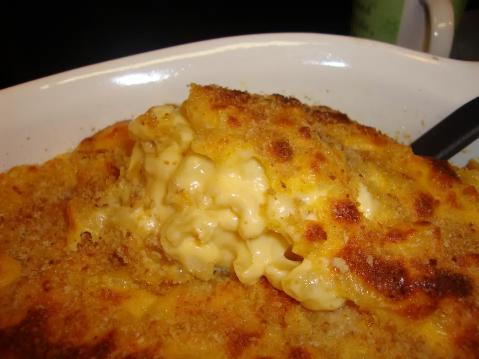
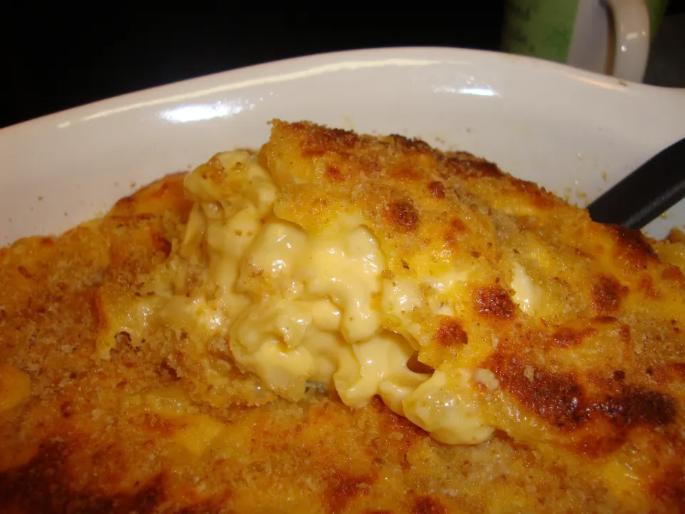

UNITS: US
1 (8 ounce) package macaroni
4 tablespoons butter
4 tablespoons flour
1 cup milk
1 cup cream
1/2 teaspoon salt
fresh ground black pepper, to taste
2 cups cheddar cheese, shredded good quality
1/2 cup breadcrumbs, buttered
Preheat oven to 400°F.
Cook and drain macaroni according to package directions; set aside.
In a large saucepan melt butter.
Add flour mixed with salt and pepper, using a whisk to stir until well blended.
Pour milk and cream in gradually; stirring constantly.
Bring to boiling point and boil 2 minutes (stirring constantly).
Reduce heat and cook (stirring constantly) 10 minutes.
Add shredded cheddar little by little and simmer an additional 5 minutes, or until cheese melts.
Turn off flame.
Add macaroni to the saucepan and toss to coat with the cheese sauce.
Transfer macaroni to a buttered baking dish.
Sprinkle with breadcrumbs.
Bake 20 minutes until the top is golden brown.
(You can also freeze this recipe in zip-lock bags for later use - once you have mixed the macaroni along with the cheese sauce allow to cool to room temperature before adding to your freezer - I generally pull it out the night before and allow macaroni and cheese to reach room temperature; I then add the macaroni and cheese to a buttered baking dish, sprinkle with bread crumbs and then bake for 20 to 30 minutes, until golden brown on top and bubbling.